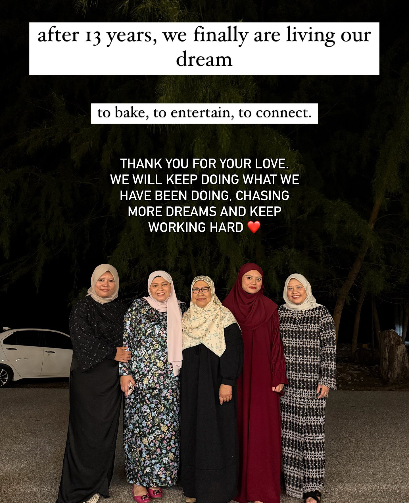
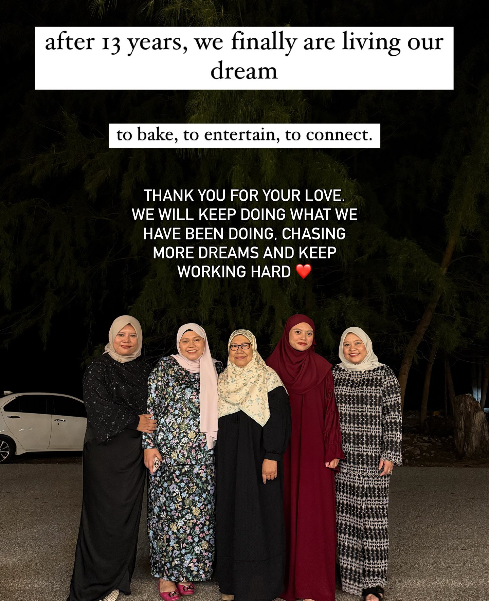

Our Journey
13 years of passion, chocolate, and creativity. Every slide tells a story of passion and elegance.
2012
Our journey started at a local night market with a simple table, a few plastic containers, and a big dream to share our love for baking with the world.
2013
In the early days, achieving a permanent home for our bakes seemed almost impossible, but we kept kneading and whisking through every challenge.
2017
We took a major leap by moving from the market stall into our very first fixed space—a modern black container cafe—proving that our vision was truly starting to work.
2020
Despite global uncertainties, we remained hopeful that "this time it will" finally grow into the sanctuary we always imagined.
2021
We stood before a bare, yellow-walled building in Kampung Tok Jembal and asked ourselves, "Will it be possible?" before starting the hard work of renovation.
2021-2022
The hard work paid off as we officially opened our signature white-brick cafe with the iconic purple door, welcoming guests to a space where it finally felt like "it worked!".
2023
Settled into our beachside home, we spent the year perfecting our artisanal craft and becoming a beloved landmark in the Kampung Tok Jembal community.
2025
Today, we look back at 13 years of Chocacake with gratitude, celebrating a journey that began with a market stall and blossomed into a beautiful seaside retreat.
 
